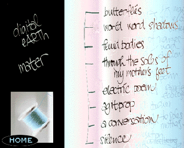

View with Netscape 3.0, let document override colours in preferences. Install Plug-Ins: Real Audio, QuickTime, and Shockwave. If you are running on earlier versions of Netscape or other browsers that don't support image maps direct yourself here.